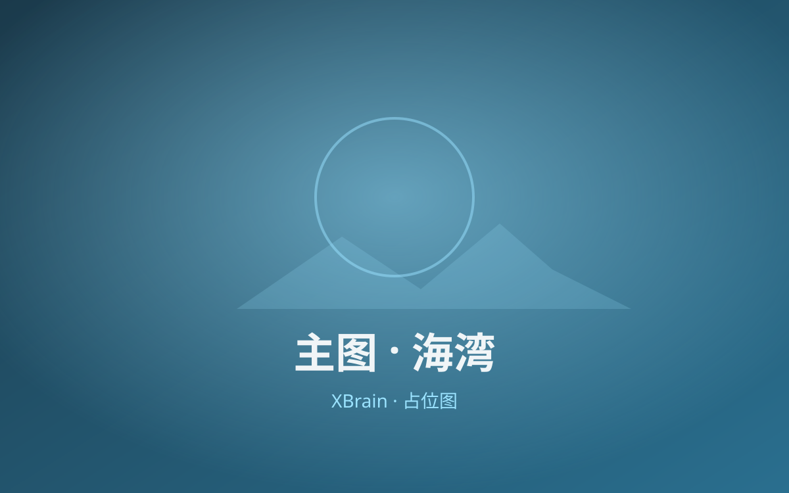
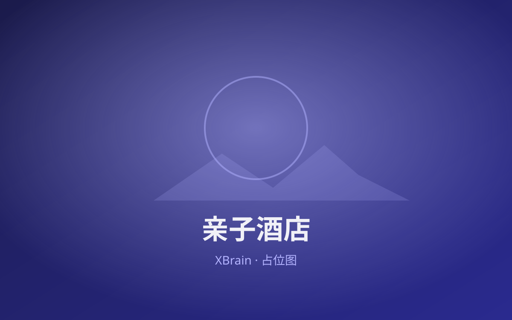

景点 & 餐厅总览
{{按行程顺序排列说明}}



{{景点名}}
{{地址 · 距离}}{{简介}}
开放：{{时间}}。门票：{{参考}}。
{{副标题 · 一句话定位}}
{{一句话说明路线串联逻辑}}
{{出发地 → 各站 → 回程，含里程/时长}}
{{必看清单}}
{{天气预警与应对，可链 #weather}}
{{按行程顺序排列说明}}

{{简介}}
{{方案总述：覆盖不同天气/兴趣，点选切换可分享}}


| 出发 | 到达 | 目的地或项目 | 耗时 |
|---|---|---|---|
| 08:00 | 08:20 | {{项目}} | 0.3h |
| 09:00 | 12:00 | {{核心项目}} | 3h |
{{节点描述}}

{{描述，可链 #culture / #spots}}
| 出发 | 到达 | 目的地或项目 | 耗时 |
|---|---|---|---|
| 09:00 | 11:30 | {{项目}} | 2.5h |
{{描述}}
制定方案并执行后，在此按时间/站点记录真实行程；每章一段叙述 + 可选组图，主图命名 index.*。
{{实际发生了什么、按计划走了哪段、有没有偏离、孩子/家人的反应、随手拍。真实即可，无需规划腔。}}
{{想补充的细节：停车是否好停、哪条路阴凉、哪个角落出片、与原计划的差异。}}
{{这一段记录：原计划外的小插曲、临时起意的去处、家人最难忘的瞬间。}}
吃了什么、哪家店、随手的小发现（小店/展览/路人有趣的事）。
{{吃了什么、味道、值得再来吗。}}
{{环境、是否适合带娃、出片与否。}}
{{带孩子看懂背景，旅行不只是看热闹}}
背景：{{...}}讲给孩子听：{{...}}
{{时间来源说明，以官方公告为准}}
| 景点 / 场馆 | 开放时间 | 门票参考 | 备注 |
|---|---|---|---|
| {{景点}} | {{时间}} | {{门票}} | {{备注}} |
{{酒店定位说明}}
{{按日/按时段评估，给出保底方案}}
{{预报 + 对行程的影响 + 备选}}
{{行前/行中提醒}}